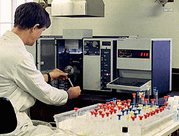

Atomic absorption spectrophotometry (AAS)Atomic absorption spectrophotometry (AAS) is an analytical technique used to measure a wide range of elements in materials such as metals, pottery and glass. Although it is a destructive technique (unlike ED-XRF), the sample size needed is very small (typically about 10 milligrams - i.e. one hundredth of a gram) and its removal causes little damage. The sample is accurately weighed and then dissolved, often using strong acids. The resulting solution is sprayed into the flame of the instrument and atomised (see schematic diagram). Light of a suitable wavelength for a particular element is shone through the flame, and some of this light is absorbed by the atoms of the sample. The amount of light absorbed is proportional to the concentration of the element in the solution, and hence in the original object. Measurements are made separately for each element of interest in turn to achieve a complete analysis of an object, and thus the technique is relatively slow to use. However, it is very sensitive and it can measure trace elements down to the part per million level, as well as being able to measure elements present in minor and major amounts.
Look up another technique |
||